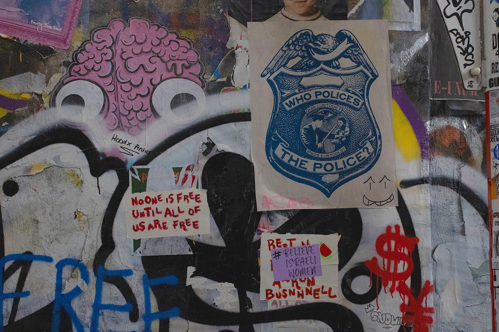

The Ethics and Morality of Graffiti by Araceli
 Supreme Store, March 13, 2024. LES, NYC
Supreme Store, March 13, 2024. LES, NYC
 Street Posters, March 13, 2024. Freeman Alley, NYC.
Although I appreciate graffiti for its artistic qualities, I recognize that it is a criminal act. It tends to go unreported and is often viewed as an acceptable form of street art, but it is not a victimless crime. In 2002, it was reported that graffiti cost the public $12 billion a year to clean up in the United States [7]. My grandfather faced a constant battle against graffiti made by local gangs on his house and had to invest time and money into having it covered up. Along Canal Street, many business owners have given up the fight against graffiti and let their storefronts become covered.
 Another Storefront, March 13, 2024. Broome St, NYC.
Another Storefront, March 13, 2024. Broome St, NYC.
While its presence may raise moral questions depending on the context, I still admire graffiti as an art form. I respect the exclusivity of graffiti. It's not a skill one casually picks up like drawing. Rather, it demands real-world experimentation and often entails risks. As an art form, it challenges conventional boundaries and commands attention and reaction. Through my exploration of New York City and this project, I've come to appreciate graffiti as a tool for rebellion and resistance against oppression, often reflecting society's cultural consciousness. While vandalism of public spaces costs taxpayers money, I struggle to muster anger towards it. Campaigns to eradicate graffiti often feel contrived and fail to acknowledge its cultural significance, sometimes detracting from the city's aesthetic appeal. Graffiti, like other forms of street art, adds a textured layer to urban life and fosters a sense of connection to society, even if unintentionally.
Sources:
- [1] Art, Trendy. “What’s the Difference Between Street Art and Graffiti ?” The Trendy Art, 30 June 2023
- [2] Decker, Scott H., and Glen D. Curry. “Graffiti Definition, History, and Facts.” Encyclopedia Britannica, 7 Mar. 2024
- [3] Ehrlich, Dimitri. “Summer Guide - a History of Graffiti in Its Own Words.” New York Magazine, 22 June 2006
- [4] Wikipedia contributors. “Graffiti in New York City.” Wikipedia, 13 Mar. 2024
- [5] Alioto, Daisy. “How Graffiti Became Gentrified.” The New Republic, 25 Mar. 2024
- [6] Campbell, Jon. “Graffiti as a Hate Crime Divides NY Gov. Hochul and Progressive Democrats.” Gothamist, 12 Feb. 2024
- [7] “Graffiti.” ASU Center for Problem-Oriented Policing, 16 Oct. 2022
- [8] Collins, Dave. “How Do Graffiti Artists Get Up There? Exploring Artists’ Techniques and Tools | Will Power.” Hip Hop Is My Religion, 9 Apr. 2023
- [9] Importer. “‘the Original Street Style – Lettering Malandro’ Exhibition Mexico City.” MOLOTOWTM Blog, 25 Feb. 2021
- [10] “Graffiti Styles: Top 10 Types of Graffiti Explained - Eden Gallery.” EDEN Gallery